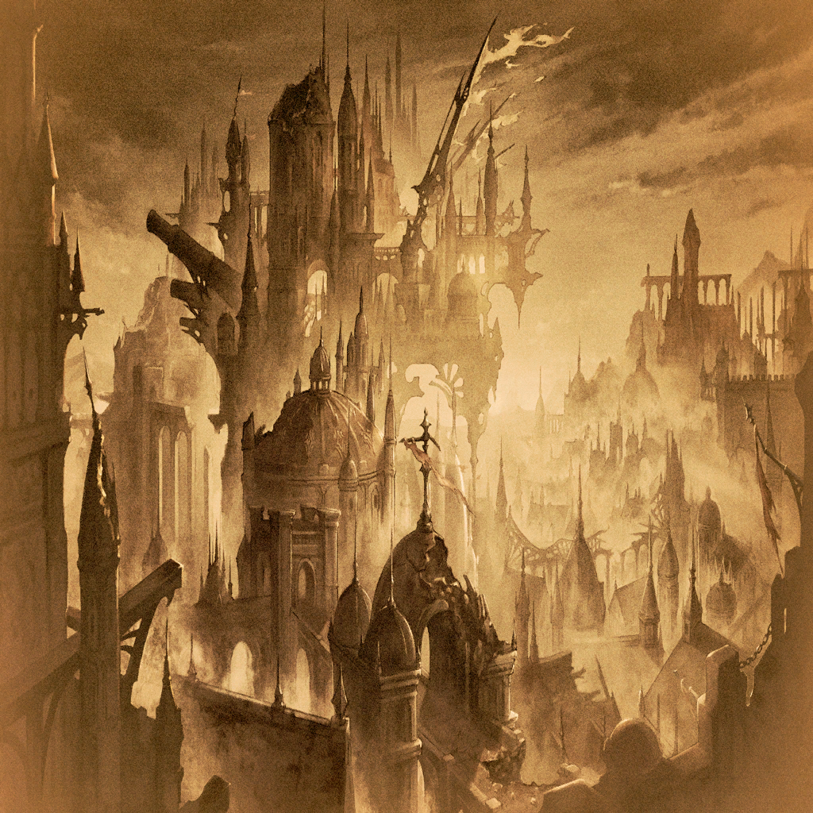

|
 |
| アニム |
アガサ！
聞こえていますか!?
戻ってきてください、アガサ！ |
| アニム |
…もしかして…サタンがアガサ自身の憤りを
足がかりに干渉してきた…？ |
| アニム |
このままではアガサが
サタンに呑み込まれてしまう…
だったら…！ |
| アニム |
あなたはここで犠牲になるべきじゃないんです
…いえ、なってほしくない
だから―― |
| アニム |
今、私にできることを…！ |
| アニム |
完全にサタンに呑み込まれてしまう前に、
あなたが戻ってくることのできる道を
作ってみせます…！ |
| アニム |
一歩間違えれば私の意識もサタンに
取り込まれてしまうかもしれない…
でも、あなたを失いたくはないんです…！ |
| アニム |
どうか、私のアルケミィを頼りに…
戻ってきて、アガサ…！ |
|  |
| アガサ |
グ…ッ…！ |
| アガサ |
私は…ここで死ぬわけには…！ |
| アガサの影 |
どうして抗おうとするの？
犠牲になるのは怖い？
だったら安心するといいわ |
| アガサの影 |
この世界は、
犠牲の上で成り立っているんだから |
| アガサ |
…!? |
| アガサの影 |
だって、そうでしょう？
犠牲をもって何かを守る―― |
| アガサの影 |
そんな選択はたくさんあるんですもの |
| アガサ |
…!?
いったい何を…！ |
| アガサの影 |
あなたの意識に、直接焼き付けてあげる |
| アガサの影 |
ラーストリスが歩んできた
犠牲の歴史をね |
 |
| アガサの影 |
騎士が選んだのは、
王家を守る為に自身が犠牲となる道―― |

アナスタシア |
守るべきものを守る
その為ならこの命、
燃やし尽くしても構わない |
アナスタシア |
花は、散ることを恐れないのだから |
 |
| アガサの影 |
騎士は勝利を掴み、祖国を守ろうとした
それが己の矜持に背く道でも―― |
ネヴィル |
騎士としての誇りを捨ててでも、
譲れぬものがある
許すことのできぬものがある |
ネヴィル |
ならば私はその為に
蛇の道をゆこう |
|
| アガサの影 |
騎士は理不尽な行いを止めるべく、
その身を犠牲にし
最後まで立ち向かった―― |
カイザル |
早く止めなければ…！
ラーストリスの無辜の民たちの為に
このくだらぬ謀略を…！ |
カイザル |
この怒り、この炎…
死しても消えると思うな…！ |
 |
| アガサの影 |
騎士は先に逝った者たちの
想いを受け継ぎ、最後の最後まで
戦い抜いた―― |
ブラド |
騎士としての我は、仲間とともに死んだのだ
今我が為すべきことは… |
ブラド |
ラーストリスの憤怒となりて
この身を燃やし尽くすだけのことよ |
|
| アガサの影 |
他にも数々の犠牲が
ラーストリスの歴史には刻まれている |
|
| アガサ |
何………これ………！ |
| アガサの影 |
ラーストリスの歴史の一幕よ
あなたが知らない、ね |
| アガサの影 |
犠牲によって守られてきたものの
なんと多いこと…
あなたはそれを垣間見た |
| アガサの影 |
次は…あなたの知る犠牲を
思い出させてあげる |
 |

ジーク |
ア、アガサを守れ、ディオス…
俺の…最愛の息子よ… |

ロギ |
お前は…
もはや心を棄ててしまったのか…！ |

ディオス |
すべては、
お前の甘い理想が引き起こした結末…！
決して、許しはしない！ |
| アガサ |
ダメ…!!
やめて、二人とも!!! |
ロギ |
…ウォォォォォォーッ!!! |
ディオス |
…ウォォォォォォーッ!!! |
|
| アガサの影 |
これはあなたが“転生の器”だからこそ
起こった悲劇
…わかっているんでしょう？ |
| アガサ |
…ええ。わかってる |
| アガサ |
私がいたから、
ロギとディオスは―― |
| アガサの影 |
そうよ…そしてその結果、
大切な者たちに犠牲を
強いてしまうことになるかもしれない |
| アガサの影 |
それを避ける為にも
あなた自身が犠牲になったほうがいい…
あなただってそう思ってるんでしょ？ |
| アガサ |
…………… |
| アガサの影 |
ほら、図星じゃない
だから私が叶えてあげるわ |
| アガサ |
（…そうよ。私の望みは
大切な人たちを守ること） |
| アガサ |
（私がいることで
みんなが危険に晒されるのだとしたら
私は――…） |
| アガサ |
…………… |
 |
| アガサ |
…………!? |
| アガサ |
…このアルケミィは…アニムさんの…！ |
| アニム |
どうか戻ってきて…！
このアルケミィを頼りに… |
| アニム |
私は、あなたを失いたくない…！ |
| アガサ |
アニムさん…！ |
|
| アガサの影 |
さあ――死んで |
| アガサの影 |
!? |
| アガサの影 |
どうして抗うの!?
やるべきことはわかっているのに！ |
| アガサの影 |
みんなを守る為に、死になさい！ |
| アガサ |
…それは、できないわ |
| アガサの影 |
なぜ!? |
| アガサ |
自分にできることがないのなら
守りたいものの為に犠牲になってもいい
…そう、心のどこかで思ってた |
| アガサ |
でも、それは大きな間違いだった |
| アガサの影 |
否定するというの!?
ラーストリスの歴史を！
他でもない、あなたが！ |
| アガサ |
そうじゃない…彼らの選択は
その時の状況で精いっぱい戦った
彼らの想いの果てに生まれたもの |
| アガサ |
それを否定したりなんかしない
だけど――… |
| アガサ |
その選択をするより先に
できることを探したい |
| アガサ |
今、私がここで自己犠牲を選んだら
私を信じてくれた人の期待から
逃げることになる |
| アガサ |
そうやって安易に答えを出してしまうなんて
――そんな結論、きっと
先の英雄たちだって認めてくれないわ |
| アガサの影 |
力のないまま戻ったところで
何ができるの？ 何もできないくらいなら
犠牲になって誰かを守れるほうがいい |
| アガサ |
まだ何もできないと決まったわけじゃない
だからまず手始めに…あなたをここで
超えてみせるわ |
| アガサ |
アニムさんが教えてくれた
アルケミィには想いが混ざるんだって |
| アガサ |
私は、感じたの
私に連なるたくさんの想いを |
| アガサ |
みんな、大切なものの為に…
守るべきものの為に戦っていた！ |
| アガサ |
だから私も
こんなところで挫けるわけにはいかないの！ |
| アガサの影 |
抗ったところで何になるというの!?
あなたが犠牲になればすべてが済むのに!! |
| アガサ |
いいえ、違うわ
何も終わったりしない |
| アガサ |
犠牲を選ぶということは、
誰かの悲しみを生み出すということ
そして誰かの手が汚れてしまうということ |
| アガサ |
それが更なる争いに繋がってしまうところも
私は見てきた。だから―― |
| アガサ |
私が犠牲を選ぶことは、二度とない |
| アガサの影 |
…………！ |
| アガサ |
犠牲になる選択肢しか持てなかった人も
きっといるでしょう…だけど私には
それ以外の選択肢がまだ残ってる |
| アガサ |
それなのに、安易に犠牲を選択するのは
ただの妥協であり、甘えなの |
| アガサ |
だから私は受け入れないわ
この世界を守る為の力を、
ここで示してみせる…！ |
| アガサの影 |
――無駄な足掻きよ!! |
| アガサ |
！ |
| アガサの影 |
あなたに世界は変えられないわ
だから、おとなしくここで犠牲になりなさい |
| アガサの影 |
…………!? |
| アガサ |
…そうね
私に世界は変えられない
大切な人を何度悲しませたかわからない |
| アガサ |
だからこそ思うの
どんどん想いが強くなる
…今度こそ、守りたいって |
| アガサの影 |
!? |
| アガサ |
私は世界を変えられなくたっていい
今ある悲しみを拭い去る一端となれるのなら |
| アガサ |
今ある笑顔を守る為の一端となれるのなら |
| アガサの影 |
なんなの…この力…!? |
| アガサ |
サタン…確かにここはあなたの
生み出した世界なのかもしれない
でも、だからこそ私にできることがある |
| アガサ |
ここがあなたの作り出した世界で
あなたが私を呑み込もうとしてるのなら
私の中に今あなたはいないはず… |
| アガサ |
だとしたら、私は私のアルケミィを
存分に循環させることができるということ
つまり… |
| アガサ |
ここなら邪魔は、入らない |
| アガサの影 |
っ…！
このアルケミィは…！ |
| アガサ |
滑らかに、アルケミィを循環させる
アニムさんに教えてもらった通りに―― |
| アガサ |
――私の力を示してみせる |
| アガサの影 |
…………！ |
| アガサ |
これが誰にも依らない、私だけの力
みんなを守る為の力よ |
| アガサの影 |
そんなもの…元の世界に戻ったら
使えないような力じゃない！ |
| アガサ |
使えないのなら、使えるようにするまでよ |
| アガサ |
何をしてでも、どんな窮地に陥っても
私は諦めてなんかやらない…！
最後の最後まで立ち向かってみせる！ |
| アガサ |
それが、私の覚悟よ！ |
| アガサの影 |
…!? |